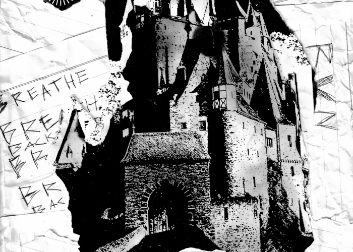
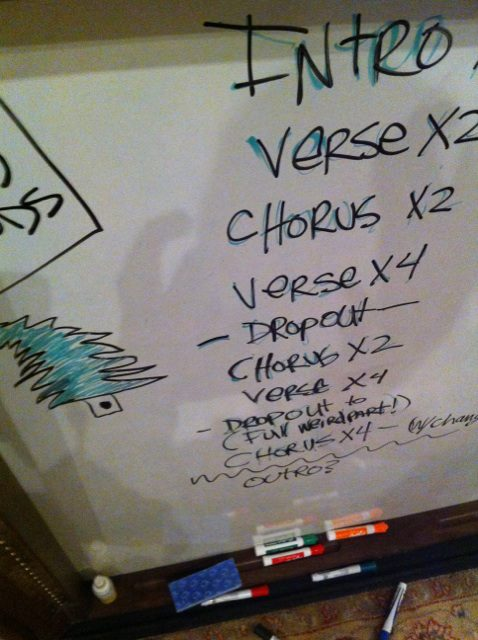
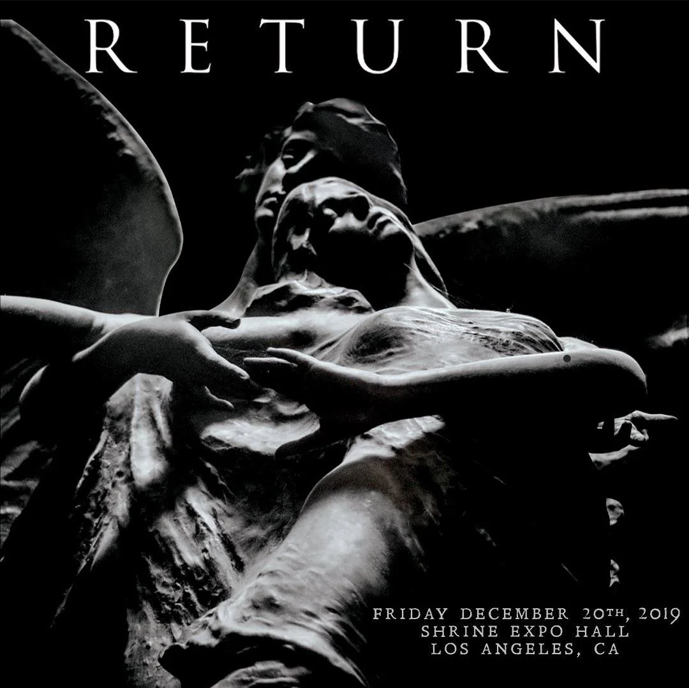

This article is a work in progress - expect placeholders, grammatical errors and missing sections.
The Paper Kingdom

The Paper Kingdom
The Paper Kingdom has never been officially released, and is currently only obtainable through unofficial means. Leaking and distributing copyrighted material is against the law, we do not condone it nor will we be sharing any links to copyrighted material on this page.
Timeline
Who's who?
- Doug McKean: Audio engineer, record producer and friend of the band who did engineering for The Black Parade and Danger Days, and was set to produce The Paper Kingdom.
- Excalibur: Leaker who uploaded three snippets from The Paper Kingdom onto a forum, and put the full album on sale.
- Aang and ATTAM: Forum users who allegedly purchased the album together for ten thousand dollars.
- D0UG: Served as a middleman for the transaction between seller Excalibur and the buyers Aang and ATTAM.
- Coming of Jesus: Leaker who posted an unfinished workprint of the full album online, and attempted to sell more unreleased material. He would later be called out for scamming and obnoxious behaviour, leading to his reputation being ruined.
- Toasty: Leaker who released numerous tracks from The Paper Kingdom sessions, disappearing shortly after dropping a mega leak containing 20 gigabytes of material.
2010
November
- November 22, 2010: Danger Days is released.
2011
August
-
August 12, 2011: During an interview with chorus.fm, Mikey Way reveals the band has been experimenting with new material.
Yeah, we have actually. We kind of write every day and we don’t even realize we’re doing it. Sometimes we’ll be at soundcheck and someone will have a riff and everyone starts playing off the riff, or Gerard [Way] has a vocal melody and everyone starts playing off the vocal melody. We’ve had tons of stuff come from that. We’re not really sure where the songs are going to end up or what they’re going to be yet, but we’re just going to keep writing and writing. After this tour, we’re going to pretty quickly continue demoing and then get in there as soon as possible to make a new album.
When asked was the new material sounded like, Mikey responded:
The weird thing is, whenever we have a new batch of songs pop up during a record cycle or after a record cycle, it’s usually some kind of kind of thing that gets us to the next sound. Any time we try to guess where we’re going to be or where we’re going to go, we’re usually wrong but we’re always very pleasantly surprised at where we ended up. It’s hard for us to guess what it’s going to end up sounding like. Right now, it’s definitely a mix of Danger Days and some of the stuff we did back in the day.— Mikey Way
Source: chorus.fm
2012
January
-
January 18, 2012: During an interview with Destroya News, Frank Iero reveals the band is in the early stages of figuring out their fifth album. He doesn't give any further information, but he does say:
“I can tell you that I think about music in colour, and I see a lot of orange in the next record."— Frank Iero
Source: Destroya News
-
January 31, 2012: At the end of the month, the band soundchecks an unknown song before a show, speculated at the time to be new material. There's only two videos of the soundcheck, the first video is in very low quality and the second video cuts off right before the soundcheck starts but the author does provide a potential lyric in the description.
"I loathe my camera so much because it ran out of battery after this, just when they played a NEW SONG. It was so beautiful, oh my God. But I can't remember it now. All I remember is one lyric that was like "when the rain pours down". Waaahhhh :("— Gee Whizzy
If you only knew what this sounded like! pic.twitter.com/q6WvyFEy
— Doug McKean (@mckeanwest) July 31, 2012
Source: ToxicBoomKilljoys & Gee Whizzy
February
-
February 4, 2012: During an interview with Noise11, the band reveals they are building a new studio in Los Angeles to record their fifth album in.
Yeah, back in L.A., we just got a studio, so we’re kind of building that out and basically trying to make a kind of compound where we can be creative and be there whenever we want to be. That’s one of the tough things, you know, when you’re doing records in a kind of a cycle, you khave like maybe 3 or 4 months’ time window where you have to write and record a record. Sometimes that’s tough, and you can take longer, but you always feel like there’s something over your head like a time constraint. And, you know, now we’ll have our own place where we can go and make music 24 hours a day, and it’s going to be great.— Ray Toro
Source: Noise11 (Transcript)
March
-
March 21, 2012: The band is interviewed by Australian news outlet The Advertiser, during which Mikey Way talks about the fifth album. He says that while he doesn't know yet what the album will sound like, he's confident it prove non-believers wrong.
People had formulated ideas about our band just based on seeing a kid in one of our T-shirts – and they were wrong.— Mikey Way
Source: Unavailable, but Destroya News reposted the interview on their website.
-
March 23, 2012: My Chemical Romance posts pictures on their Facebook page, showing off their new studio. One of the pictures shows songwriting notes, and the structure of a song.

Source: Facebook
May
-
May 15, 2012: During an interview with The Aquarian, Frank Iero says the writing process is going well and that they're about a month away from recording their fifth album.
It’s going really well, actually. I’m really excited. I can’t wait to start tracking. I think we’re maybe a month away from the record button lighting up.
He also reveals touring drummer Jarrod Alexander will be recording with them.
Jarrod is a rad guy and a fantastic player. It’s been really fun making music with him these past few months. He loves coffee and hitting drums super-hard… and the fact that he’s not a thieving piece of garbage is a breath of fresh air.— Frank Iero
Source: The Aquarian
June
-
June 11, 2012: While the rest of the band is out watching the 2012 Stanley Cup Final, Gerard writes a new song called "Fake Your Death". Reflecting on the song two years later, he wrote:
What was not so obvious at the time was that the song was, and would serve as, a eulogy for the band, though I should have known it from the lyrics. I think internally I did, as I felt an odd sense of sadness and loss after hearing back the words on top of the music. I also felt a strange sense of pride in how honest it was, and could not remember a band recording a song of this nature, being so self-aware. Ending felt like something honest, and honest always feels like something new.— Gerard Way
Source: AltPress
August
-
August 13, 2012: Gerard briefly talks about the fifth album during an interview with Kevin Smith.
Gerard Way: [holds up 5 fingers] Five. I’m only calling it-… I like to call it MCR 5 right now, so I’m really excited…
He says the album is going "rather quickly", and that he'll be meeting with Colleen Atwood (costumer designer for The Black Parade and Danger Days) to discuss costumes for the fifth album.
Kevin Smith: When’s the album come out?
Gerard Way: We don’t know yet, but this one is going rather quickly, and I’m very excited about that. And, it’s very dark so far, but I really like it.
Kevin Smith: Are you going to dress up for this one, or are you going to be you?
Gerard Way: This one. Yeah, this one has… Because, the last one, we didn’t dress up. This one I’ve got something worked out that’s really awesome, and I can’t wait-… I’m actually going to meet with Colleen [Atwood] soon about it.
October
-
October 13, 2012: While promoting his upcoming comic book The True Lives of the Fabulous Killjoys, Gerard is asked by interviewer Becky Cloonan if the next album will tie into the comic book.
Gerard Way: No, the next album will be something completely different.
When asked if he's found a theme for the next album, Gerard says:.
Gerard Way: It's a little too early to say, if I say it now, it probably changed five more times.
Becky Cloonan: You'll just jinx it.
Gerard Way: Yeah, I'll jinx it too.
Source: Artisan News
2013
March
-
March 9, 2013: Kill Hannah frontman Mat Devine is revealed by Kerrang, during the interview he reveals Gerard Way played him four new songs from their upcoming fifth album.
It's incredible! It's slightly new territory; it's an evolution. I've heard four new songs. It's exactly in line with what My Chem fans will be thrilled to hear, but at the same time it really marks what I think is a new phase [for the band]. It's super refreshing, but at the same time familiar in the way you want it to be.— Mat Devine
-
March 23, 2013: My Chemical Romance announces their break-up, and the fifth album is scrapped.
Being in this band for the past 12 years has been a true blessing. We've gotten to go places we never knew we would. We've been able to see and experience things we never imagined possible. We've shared the stage with people we admire, people we look up to, and best of all, our friends. And now, like all great things, it has come time for it to end. Thanks for all of your support, and for being part of the adventure.— My Chemical Romance
Source: My Chemical Romance
October
-
October 5, 2013: During a panel discussion at the Sydney Graphic Festival, Gerard talks about the depressive state he was in during the recording of the scrapped fifth album.
I fell back into a lot of old habits because it was easy, because I felt in control. I wasn't in control at all, and then after climbing out of it - it got worse, it got worse because I became even more paralyzed, even more depressed and I started to work on a record that was a concept record about a grouo of parents in a support group because they had all lost their children in a horrible way, and that was supposed to be the last record - and that's not the story I wanted to tell, and the songs reflected that. You could it hear it, and all the joy, it was gone.— Gerard Way
Source: Sydney Graphic Festival Panel
2014
July
-
July 24, 2014: Gerard is featured on Andy Greenwald's podcast, where he reveals the title of the scrapped fifth album and offers some insight into it's production.
Gerard Way: That My Chem record that didn't get made, it was really- not only was it reModsally dark, it was supposed to be like a whole stage production that we went into places like the theatre that's here in Downtown.
Andy Greenwald: The Disney Theatre, yeah.
Gerard Way: Because that's where I'd seen Black Rider. I was basically finding anything else to do besides write music. And that started on Danger Days, really, once that music was done there was no tweaking to it, it was just like "art, art, art, art, art". And then, this was starting right away where it was like, yeah we cared what the songs were, it's just gonna be a bunch of dark stuff. You know, we're gonna build costumes and stage set and it's going to be a storyline about a support group of parents who are dealing with the loss of their children, so they make up this story about the children all being missing in the woods and fighting this witch. And that, that's what it was about.
Andy Greenwald: Did you have a name for it?
Gerard Way: Yeah, it was called The Paper Kingdom.
Andy Greenwald Way: Sounds kinda cool, sounds dark.
Gerard Way: Yeah, it does, and you know, there may be a time in my life where I want to do The Paper Kingdom, and maybe it's a book, maybe it's something else. I don't feel that dark, I don't feel like I want to be in a support group for- mentally, on stage every night being in a support group.
Source: Andy Greenwald Podcast
-
September 30, 2014: Biographer Tom Bryant releases Not the Life It Seems: The True Lives of My Chemical Romance, an unauthorized biography detailing the bands history from their formation in 2001 to their break-up in 2013s. The book reveals new information about the production of The Paper Kingdom.
He’s an awesome engineer, he knows everything. He’s a genius. He definitely helps shape the sound of songs. He does funny stuff like play back stuff in a different way or change arrangements and trick our ears and we’ll be like “That was awesome! Look at what we did!"— Ray Toro talking about working with sound engineer Doug McKean.
It's also revealed that touring keyboardist James Dewees was going to be involved in the writing process for The Paper Kingdom, becoming a full-time member of the band.
That was a big change for us, with that, came the ability to be super dark and have these ominous things going on that really filled us out. Having James around was really cool because he’s an absolute genius. I’ve never met anybody as musically skilled and creative as him. — Frank Iero talking about working with keyboardist James Dewees.
Source: Not the Life It Seems: The True Lives of My Chemical Romance
2019
-
October 31, 2019: My Chemical Romance announces they will reuniting for a show in Los Angeles, scheduled for the 20th of December.

2020
2022
September
-
September 26, 2022: On a music trading website, a user called Excalibur leaks snippets of three songs from the The Paper Kingdom:
- Dark Cloud
- Witch
- Wake Up!
Excalibur initially lists the album for sale for $10,000, though it's later changed to "Best Offer" instead.

Source: Blunt Magazine
-
September 27, 2022: Excalibur is surprised by the strong reaction to the leaks from the My Chemical Romance community, and writes:
Okay okay, I've seen countless remarks on both Reddit and Twitter (some strange threats even) I'm here to respond. Personally, I didn't know this would blow up to this extent and for now I'm gonna keep this as a private buy regarding the ones who are mad that I had any intentions to leak this knowing it's music the band made when they were all in a dark place. A group buy isn't out the window just yet but if there's enough interest for one I MAY consider it. None of this is "fake" and I don't think AI can generate rock / the instrumentals that easily.
Althought, if anyone's interested in the Foundations of Decay session, message me. I also have countless versions of the track.
— Excalibur
Source: Blunt Magazine
October
-
October 17, 2022: My Chemical Romance debuts Fake Your Death live during a show at the Kia Forum, making it the first song from The Paper Kingdom to be performed live.
2023
2024
2025
2026
Contact
January 18, 2012: During an interview with Destroya News, Frank Iero reveals the band is in the early stages of figuring out their fifth album. He doesn't give any further information, but he does say:
“I can tell you that I think about music in colour, and I see a lot of orange in the next record."— Frank Iero
Source: Destroya News
January 31, 2012: At the end of the month, the band soundchecks an unknown song before a show, speculated at the time to be new material. There's only two videos of the soundcheck, the first video is in very low quality and the second video cuts off right before the soundcheck starts but the author does provide a potential lyric in the description.
"I loathe my camera so much because it ran out of battery after this, just when they played a NEW SONG. It was so beautiful, oh my God. But I can't remember it now. All I remember is one lyric that was like "when the rain pours down". Waaahhhh :("— Gee Whizzy
If you only knew what this sounded like! pic.twitter.com/q6WvyFEy
— Doug McKean (@mckeanwest) July 31, 2012
Source: ToxicBoomKilljoys & Gee Whizzy
February 4, 2012: During an interview with Noise11, the band reveals they are building a new studio in Los Angeles to record their fifth album in.
Yeah, back in L.A., we just got a studio, so we’re kind of building that out and basically trying to make a kind of compound where we can be creative and be there whenever we want to be. That’s one of the tough things, you know, when you’re doing records in a kind of a cycle, you khave like maybe 3 or 4 months’ time window where you have to write and record a record. Sometimes that’s tough, and you can take longer, but you always feel like there’s something over your head like a time constraint. And, you know, now we’ll have our own place where we can go and make music 24 hours a day, and it’s going to be great.— Ray Toro
Source: Noise11 (Transcript)
March 21, 2012: The band is interviewed by Australian news outlet The Advertiser, during which Mikey Way talks about the fifth album. He says that while he doesn't know yet what the album will sound like, he's confident it prove non-believers wrong.
People had formulated ideas about our band just based on seeing a kid in one of our T-shirts – and they were wrong.— Mikey Way
Source: Unavailable, but Destroya News reposted the interview on their website.
March 23, 2012: My Chemical Romance posts pictures on their Facebook page, showing off their new studio. One of the pictures shows songwriting notes, and the structure of a song.

Source: Facebook
May 15, 2012: During an interview with The Aquarian, Frank Iero says the writing process is going well and that they're about a month away from recording their fifth album.
It’s going really well, actually. I’m really excited. I can’t wait to start tracking. I think we’re maybe a month away from the record button lighting up.
He also reveals touring drummer Jarrod Alexander will be recording with them.
Jarrod is a rad guy and a fantastic player. It’s been really fun making music with him these past few months. He loves coffee and hitting drums super-hard… and the fact that he’s not a thieving piece of garbage is a breath of fresh air.— Frank Iero
Source: The Aquarian
June 11, 2012: While the rest of the band is out watching the 2012 Stanley Cup Final, Gerard writes a new song called "Fake Your Death". Reflecting on the song two years later, he wrote:
What was not so obvious at the time was that the song was, and would serve as, a eulogy for the band, though I should have known it from the lyrics. I think internally I did, as I felt an odd sense of sadness and loss after hearing back the words on top of the music. I also felt a strange sense of pride in how honest it was, and could not remember a band recording a song of this nature, being so self-aware. Ending felt like something honest, and honest always feels like something new.— Gerard Way
Source: AltPress
August 13, 2012: Gerard briefly talks about the fifth album during an interview with Kevin Smith.
Gerard Way: [holds up 5 fingers] Five. I’m only calling it-… I like to call it MCR 5 right now, so I’m really excited…
He says the album is going "rather quickly", and that he'll be meeting with Colleen Atwood (costumer designer for The Black Parade and Danger Days) to discuss costumes for the fifth album.
Kevin Smith: When’s the album come out?
Gerard Way: We don’t know yet, but this one is going rather quickly, and I’m very excited about that. And, it’s very dark so far, but I really like it.
Kevin Smith: Are you going to dress up for this one, or are you going to be you?
Gerard Way: This one. Yeah, this one has… Because, the last one, we didn’t dress up. This one I’ve got something worked out that’s really awesome, and I can’t wait-… I’m actually going to meet with Colleen [Atwood] soon about it.
October 13, 2012: While promoting his upcoming comic book The True Lives of the Fabulous Killjoys, Gerard is asked by interviewer Becky Cloonan if the next album will tie into the comic book.
Gerard Way: No, the next album will be something completely different.
When asked if he's found a theme for the next album, Gerard says:.
Gerard Way: It's a little too early to say, if I say it now, it probably changed five more times.
Becky Cloonan: You'll just jinx it.
Gerard Way: Yeah, I'll jinx it too.
Source: Artisan News
March 9, 2013: Kill Hannah frontman Mat Devine is revealed by Kerrang, during the interview he reveals Gerard Way played him four new songs from their upcoming fifth album.
It's incredible! It's slightly new territory; it's an evolution. I've heard four new songs. It's exactly in line with what My Chem fans will be thrilled to hear, but at the same time it really marks what I think is a new phase [for the band]. It's super refreshing, but at the same time familiar in the way you want it to be.— Mat Devine
March 23, 2013: My Chemical Romance announces their break-up, and the fifth album is scrapped.
Being in this band for the past 12 years has been a true blessing. We've gotten to go places we never knew we would. We've been able to see and experience things we never imagined possible. We've shared the stage with people we admire, people we look up to, and best of all, our friends. And now, like all great things, it has come time for it to end. Thanks for all of your support, and for being part of the adventure.— My Chemical Romance
Source: My Chemical Romance
October 5, 2013: During a panel discussion at the Sydney Graphic Festival, Gerard talks about the depressive state he was in during the recording of the scrapped fifth album.
I fell back into a lot of old habits because it was easy, because I felt in control. I wasn't in control at all, and then after climbing out of it - it got worse, it got worse because I became even more paralyzed, even more depressed and I started to work on a record that was a concept record about a grouo of parents in a support group because they had all lost their children in a horrible way, and that was supposed to be the last record - and that's not the story I wanted to tell, and the songs reflected that. You could it hear it, and all the joy, it was gone.— Gerard Way
Source: Sydney Graphic Festival Panel
July 24, 2014: Gerard is featured on Andy Greenwald's podcast, where he reveals the title of the scrapped fifth album and offers some insight into it's production.
Gerard Way: That My Chem record that didn't get made, it was really- not only was it reModsally dark, it was supposed to be like a whole stage production that we went into places like the theatre that's here in Downtown.
Andy Greenwald: The Disney Theatre, yeah.
Gerard Way: Because that's where I'd seen Black Rider. I was basically finding anything else to do besides write music. And that started on Danger Days, really, once that music was done there was no tweaking to it, it was just like "art, art, art, art, art". And then, this was starting right away where it was like, yeah we cared what the songs were, it's just gonna be a bunch of dark stuff. You know, we're gonna build costumes and stage set and it's going to be a storyline about a support group of parents who are dealing with the loss of their children, so they make up this story about the children all being missing in the woods and fighting this witch. And that, that's what it was about.
Andy Greenwald: Did you have a name for it?
Gerard Way: Yeah, it was called The Paper Kingdom.
Andy Greenwald Way: Sounds kinda cool, sounds dark.
Gerard Way: Yeah, it does, and you know, there may be a time in my life where I want to do The Paper Kingdom, and maybe it's a book, maybe it's something else. I don't feel that dark, I don't feel like I want to be in a support group for- mentally, on stage every night being in a support group.
Source: Andy Greenwald Podcast
September 30, 2014: Biographer Tom Bryant releases Not the Life It Seems: The True Lives of My Chemical Romance, an unauthorized biography detailing the bands history from their formation in 2001 to their break-up in 2013s. The book reveals new information about the production of The Paper Kingdom.
He’s an awesome engineer, he knows everything. He’s a genius. He definitely helps shape the sound of songs. He does funny stuff like play back stuff in a different way or change arrangements and trick our ears and we’ll be like “That was awesome! Look at what we did!"— Ray Toro talking about working with sound engineer Doug McKean.
It's also revealed that touring keyboardist James Dewees was going to be involved in the writing process for The Paper Kingdom, becoming a full-time member of the band.
That was a big change for us, with that, came the ability to be super dark and have these ominous things going on that really filled us out. Having James around was really cool because he’s an absolute genius. I’ve never met anybody as musically skilled and creative as him. — Frank Iero talking about working with keyboardist James Dewees.
Source: Not the Life It Seems: The True Lives of My Chemical Romance
October 31, 2019: My Chemical Romance announces they will reuniting for a show in Los Angeles, scheduled for the 20th of December.

September 26, 2022: On a music trading website, a user called Excalibur leaks snippets of three songs from the The Paper Kingdom:
- Dark Cloud
- Witch
- Wake Up!
Excalibur initially lists the album for sale for $10,000, though it's later changed to "Best Offer" instead.
Source: Blunt Magazine
September 27, 2022: Excalibur is surprised by the strong reaction to the leaks from the My Chemical Romance community, and writes:
Okay okay, I've seen countless remarks on both Reddit and Twitter (some strange threats even) I'm here to respond. Personally, I didn't know this would blow up to this extent and for now I'm gonna keep this as a private buy regarding the ones who are mad that I had any intentions to leak this knowing it's music the band made when they were all in a dark place. A group buy isn't out the window just yet but if there's enough interest for one I MAY consider it. None of this is "fake" and I don't think AI can generate rock / the instrumentals that easily.
Althought, if anyone's interested in the Foundations of Decay session, message me. I also have countless versions of the track. — Excalibur
Source: Blunt Magazine
October 17, 2022: My Chemical Romance debuts Fake Your Death live during a show at the Kia Forum, making it the first song from The Paper Kingdom to be performed live.
If you have any questions or information that I might find useful, please send an email to info@zweegle.com and I'll get back to you as soon as possible.
Alternatively, you can find me in the My Chemical Leakage server on Discord under the name "big death energy"!
I will not provide links to copyrighted material.Special Thanks
- Sammyliterally, for creating the original blog post that inspired me to make this one.
- The team at My Chemical Leakage, for creating the My Chemical Romance tracker.
- Feel free to join their Discord!
Credits
Creator- Zweegle
- Fedew
- Goose
- Morningstar